Seams
The twelve seams
All twelve seams in Crystal Cavern, from Quartz to Omega, with the colour of each crystal and roughly what it takes to reach it.
In Crystal Cavern, the seam changes as your all-time total (every crystal you have ever mined) grows, and the crystal in the middle changes colour and shape. Seven seams are open from the start; the other five open one at a time when you rebirth.
The first six borrow the names of real stones, and I have added a little about what each real stone is like. The six from Prism onwards are invented for this game.
"All-time total" is the amount needed to enter that seam. Each picture shows the crystal about three-quarters of the way through its seam; within a seam, the crystal gains more shards as you dig.
The seven seams open from the start
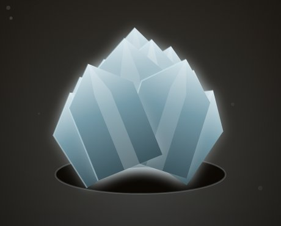
01Quartz
Where everything starts: a clean, pale blue crystal.
Real quartz is one of the most common minerals near the Earth’s surface. Clear quartz is often called rock crystal.
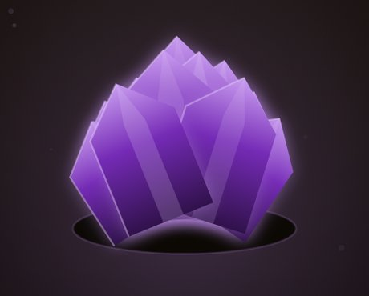
02Amethyst
After 600 crystals the crystal turns purple. This is where many people first notice that the colour changes.
Real amethyst is a kind of quartz. Its purple is thought to come from traces of iron combined with natural radiation.
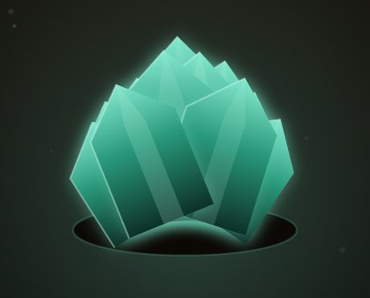
03Fluorite
A blue-green crystal. Around here the income from buildings starts to make a visible difference.
Real fluorite is known for glowing under ultraviolet light. The word "fluorescence" comes from its name.
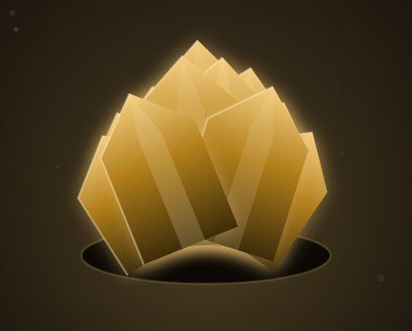
04Topaz
A golden crystal. This is roughly where the Resonance Gloves start to pay off.
Real topaz is a very hard gemstone. Yellow and orange stones are the best known, but it can also be colourless or blue.
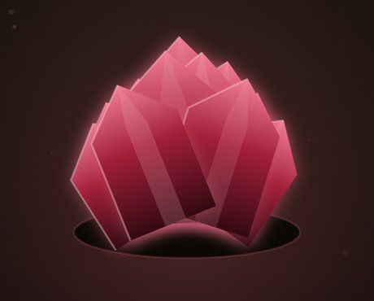
05Ruby
A rose-red crystal. Rebirth unlocks at one million all-time, so many people start thinking about their first rebirth somewhere between Topaz and Ruby.
Real ruby is the red form of the mineral corundum. Its colour comes from traces of chromium.
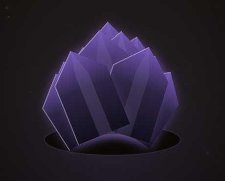
06Obsidian
The colours turn suddenly dark and quiet.
Real obsidian is natural glass, formed when lava cools very fast. Its atoms are not arranged as crystals, so strictly speaking it is not a mineral. It breaks into sharp edges and was once used to make stone tools.
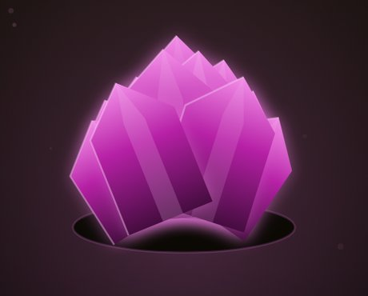
07Prism
From here on the crystals are invented. Prism slowly shifts through the colours of the rainbow while you watch. On your first run, Prism is as deep as you can go.
The five seams opened by rebirth
Rebirth while you are at Prism and the seam below it, Abyssite, opens. Dig on to Abyssite and rebirth again, and Starcore opens. In this way, each rebirth at the deepest seam you have opens one more. The details are in How rebirth works.
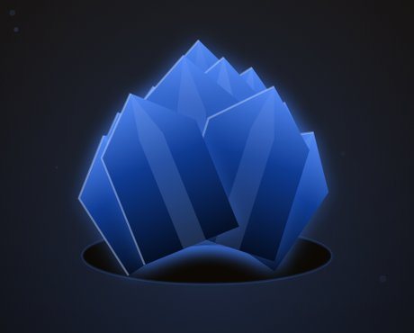
08Abyssite
A vivid blue crystal. It opens after your first rebirth.
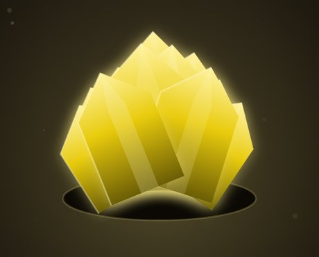
09Starcore
A dazzling yellow crystal that brings the heart of a star to mind.
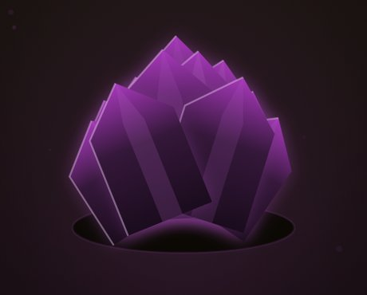
10Voidglass
A dark purple crystal that seems to swallow the light.
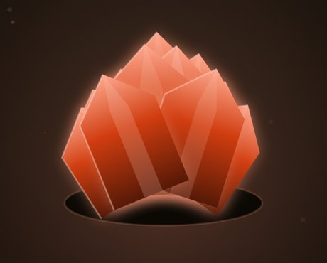
11Dawnstone
A warm orange crystal, the colour of the sky at daybreak.
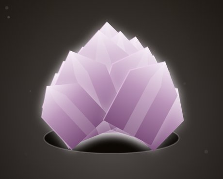
12Omega
The last seam. Pale, almost white colours drift slowly, as in Prism.
Beyond Omega
Reaching Omega does not end the game. The seam stops changing, but the depth keeps growing forever, by 4,000 metres every time your all-time total grows tenfold. From one trillion up, numbers are shown in a short form such as "1.23 × 1041".
You can see which seam you are in at the top right of the screen, and under "Deepest seam" in the Records on the Rebirth tab.